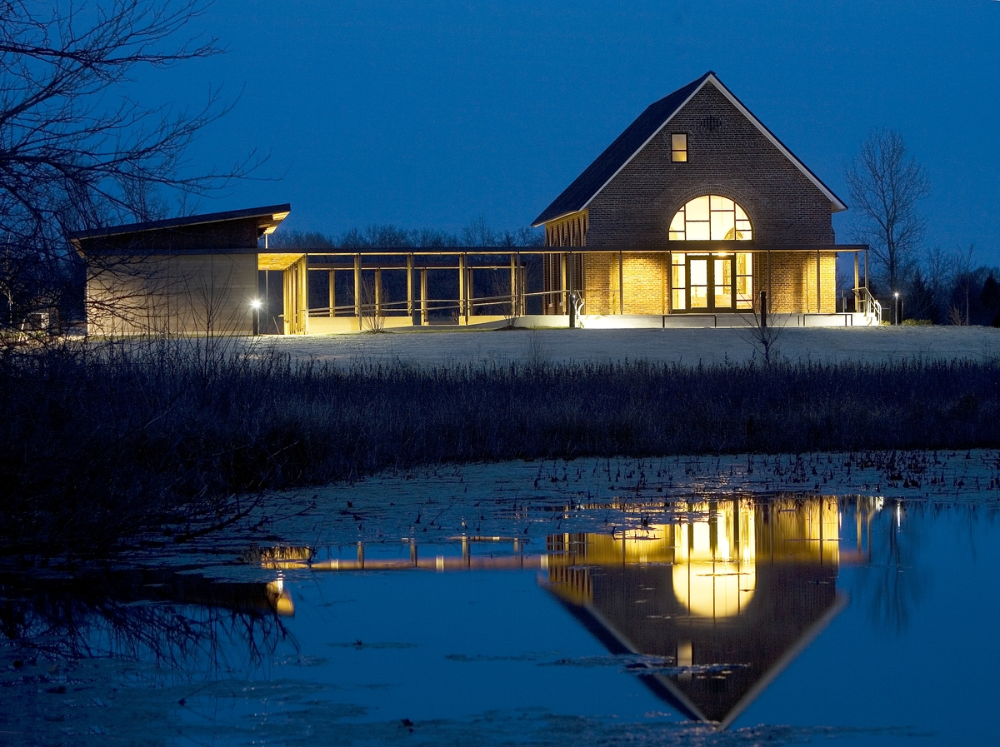

Historic Wedding Chapel
-

-
The Riverside Farnsley-Moremen Landing.
-
Riverside, The Farnsley-Moremen Landing is a historic 300-acre (120 ha) farm and house in Southwest Louisville, Kentucky along the banks of the Ohio River. The house, a red brick I-house with a two-story Greek Revival portico, was built in 1837 by Gabriel Farnsley.
Standing atop a gentle rise overlooking the Ohio River, the Farnsley-Moremen House is the centerpiece of a 300-acre historic site in Louisville, Kentucky, called Riverside, the Farnsley-Moremen Landing. Built circa 1837, the house stands as a testament to the important role agriculture along the river played in the development of our country. Two upper middle class farm families, the Farnsleys and, later, the Moremens, brought the Riverside property to life by cultivating the fields and trading on the river. In the 19th century, the Ohio River served as one of America's superhighways and the families who lived at Riverside took advantage of their location. From around 1820 until 1890, an active riverboat landing on this property allowed people traveling by river to stop to trade goods, to take on boilerwood for fuel, or to rest. In addition, a ferry operated out of Riverside carrying people and goods back and forth between Indiana and Kentucky. Gabriel Farnsley built the impressive two-story brick "I" house with its full-height Greek Revival portico by 1837. Farnsley had purchased the 200 acres, upon which the house is built, with a business partner in 1826. By 1828, Farnsley bought out his business partner to become the sole owner of the property. Farnsley prospered at his Ohio River farm located 13 miles downriver from Louisville. By 1849, the year of his death, Farnsley had increased his land holdings to 400 acres. Alanson and Rachel Moremen purchased the original 200-acre tract in 1862. They acquired additional surrounding properties bringing the size of the farm to 1,500 acres, the largest farm in Jefferson County, Kentucky, at the time. By the 1880s, the aging Alanson began legally dividing the farm among his heirs. Moremen family descendants owned the property until 1988 when they sold the house and remaining acreage to Jefferson County. Per the Riverside Farnsley-Moremen Landing website.